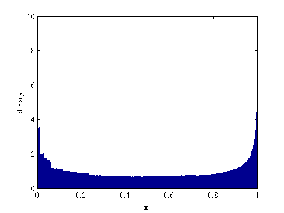

GAIO demo: Natural invariant measure of the logistic map
mu = 4; f = @(x) mu*x.*(1-x);
n = 300; X = linspace(-1,1,n)';
c = [0.5]; r = [0.5]; t = Tree(c, r);
Construct full subdivison
sd = 8; depth = 8;
for i=1:depth,
t.set_flags('all', sd);
t.subdivide;
end
Compute invariant vector
P = tpmatrix(t, f, X, depth);
[v,lambda] = eigs(P,1);
256 of 256 boxes, 0.0 sec
Plot invariant density
n = t.count(depth); x = linspace(0,1,n);
h = abs(v)*n./norm(v,1);
bar(x,h,1); axis([0 1 0 10]);
xlabel('x'); ylabel('density');
